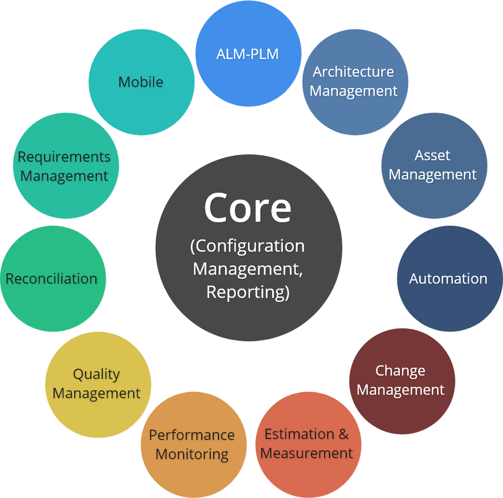

Open Services for Lifecycle Collaboration
Creating standard REST APIs to connect data
Achieving the Digital Thread
Use OSLC to connect your data and achieve the digital thread across domains, applications, and organizations

Inspired by the Web
Transition from a world of incompatible systems into a world of connected data
Before the Web
There were many hypertext systems. Those systems had no compatibility to one another. They also used different protocols to access and connect the documents. Documents in System Type 1 could not link to documents in System Type 2.
After the Web
HTML became the standard to represent and connect documents. HTTP became the standard protocol to access documents. Documents can be linked independent of their physical location.
Key Concepts of OSLC
Difference between Web of documents, as we use today, and Web of data, as enabled by OSLC
The Web of Documents

The Web uses documents, represented in HTML, to define web pages. Documents on the Web use URLs as identifiers
(URL represented by )
The Web of Data
The Web uses data, represented in RDF, to define data in the Web. Data on the Web use URLs as identifiers
(URL represented by )
Clients can request documents from Servers via a common protocol, HTTP
Clients can request data from Servers via a common protocol, HTTP
Documents from different sources can link to one another by referencing the other document's URL
Data from different sources can link to one another by referencing the other data's URL

Clients can use mashup applications to interact with documents in the Web (Search, Visualize, Analyze, etc)
Google Search, Mozilla Firefox, Google Analytics

Clients can use mashup applications to interact with data in the Web (Search, Visualize, Analyze, etc)
OSLC Benefits
Here's how OSLC can empower you
No Vendor Lock-In
Free yourself from vendor dependancy. Your data in your hands
Reusability
Reuse existing OSLC REST APIs supported by major vendor and for specific application or data formats
Application Integration
Integrate your own or existing open sources applications to visualize, search, analyze and edit your data, and more!
Source Independent
Integrate databases from different sources
Database Independent
Integrate systems with different technologies and standards
Linked Data
Link your data using widely adopted web stardards
Data Visualization
Visualize your data the way you need. Graphs, Tables, Trees, you name it
Data Analysis
Analyze your connected data for insights never before possible
Make Better Decisions
Take action with information and insight never possible before
Specifications
The OSLC Core Specification is a Hypermedia API standard currently mainly adopted in software and systems engineering domains, but with the potential to provide value to any domain with data integration challenges. The OSLC Core specifications expands on the W3C LDP capabilities, to define the essential and common technical elements of OSLC domain specifications and offers guidance on common concerns for creating, updating, retrieving, and linking to lifecycle resources.
OSLC domain-specific specifications define the equivalent of schemas in RDF for enabling data interoperability. They consist of RDF vocabularies and OSLC resource shapes. RDF vocabularies are used to describe standardized resource types and properties. OSLC resource shapes are used to define constraints such as multiplicity constraints on properties of specific resource types.
Supported By
And many more!
Latest News
Announcements, Articles, Updates, and many more!